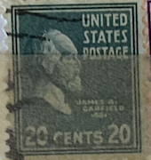
| SOURCE | TITLE| IMAGE MATCH | click to source page |
| eBay | US POSTAGE ~ James A. Garfield ~ Green 20₵ Stamp ~ Cancelled ~ c.1938 - 001 | eBay | 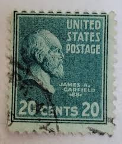 |
| eBay | US POSTAGE ~ James A. Garfield ~ Green 20₵ Stamp ~ Cancelled/Posted ~ c.1938 -55 | eBay | 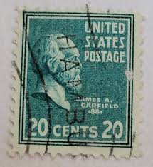 |
| eBay | James A. Garfield Cancelled 20 Cent Perfin Punched Stamp 1938 US Scott 825 | eBay | 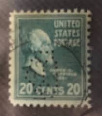 |
| HipStamp | U. S. Sc # 825 used (RS) | United States, General Issue Stamp / HipStamp | 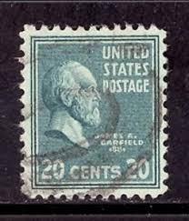 |
| eBay | Mint Never Hinged/MNH Unused US Stamps (1901-1940) 20 Cent Denomination for sale | eBay | 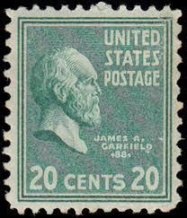 |
| eBay | Green Politicians US Stamp Errors, Freaks & Oddities for sale | eBay | 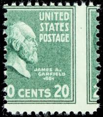 |
| eBay | Las mejores ofertas en Figuras históricas estampillas de Estados Unidos Verde 20 cent denominación | eBay | 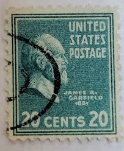 |
| eBay | Green 20 Cent Denomination Used US Stamps (1901-Now) for sale | eBay | 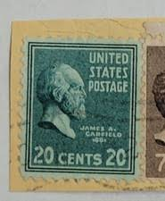 |
| Dreamstime.com | James a. Garfield US Postage Stamp Editorial Photography - Image of history, figure: 85350672 | 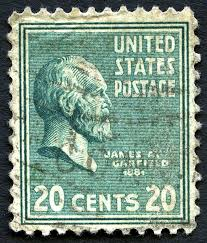 |
| Find Your Stamps Value | List of US Presidents honoured on US stamps | 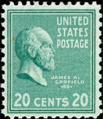 |
| Dreamstime.com | 287 Former United State President Stock Photos - Free & Royalty-Free Stock Photos from Dreamstime | 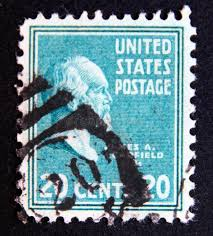 |
| eBay | Green Used United States 20 Cent Denomination Stamps for sale | eBay | 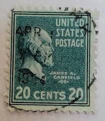 |
| OfferUp | Set Of 4 US Postage Stamps 1938 20 Cents #825 Garfield Presidential Series Blue Green (Rare Collectors Items!) for Sale in Los Angeles, CA - OfferUp | 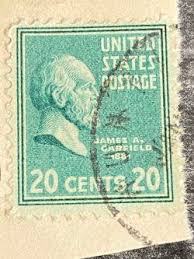 |
| Depop | Lot of 9 USA. stamps Collectible Vintage. Mail... | Depop | 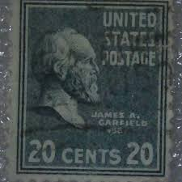 |
| WikiTree | James Abram Garfield (1831-1881) | WikiTree FREE Family Tree | 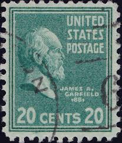 |
| RODERT LEE 30 U.S.POSTAGE 30 UNITED STATES POSTAGE AMEX AMEXA. A. CARFIEL 988จ 20 CENTO 20 Oe PATRICK PAT HENRY $1 U.S.POSTAGE U.S | 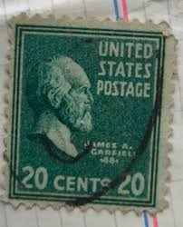 | |
| Shutterstock | Milan Italy December 21 2024 Stephen Stock Photo 2674608907 | Shutterstock | 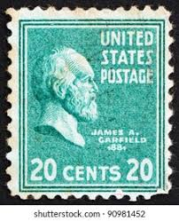 |
| My Journey Through the Best Presidential Biographies | Kenneth Ackerman | My Journey Through the Best Presidential Biographies | 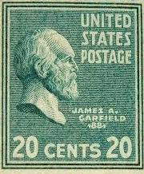 |
| HipStamp | USA, stamp, Scott#825, used, hinged, Garfield | United States, General Issue Stamp / HipStamp | 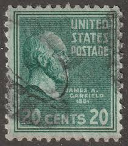 |
| Dreamstime.com | James a. Garfield US Postage Stamp Editorial Photography - Image of james, legend: 85350692 | 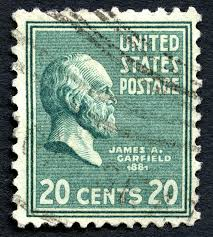 |
| eBay | Green 20 Cent Denomination Used US Stamps (1901-Now) for sale | eBay | 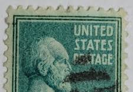 |
| Shutterstock | United States America Circa 1963 Stamp Stock Photo 64223737 | Shutterstock | 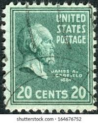 |
| Latinafy.com | Sello USA United Postage James A. Garfield .88, 20 Cent 1938 | 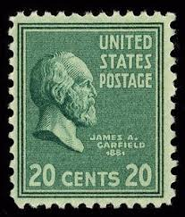 |
| Alamy | A vintage James A. Garfield postage stamp from the USA on a white background Stock Photo - Alamy | 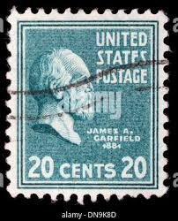 |
| iStock | Closeup American Postage Stamp Stock Photo - Download Image Now - Abstract, American Culture, Black Background - iStock | 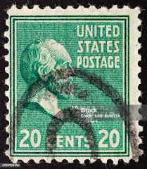 |
| Alamy | United States Postage 20 cents Stock Photo - Alamy | 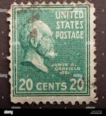 |
| Mystic Stamp Company | 826 - 1938 21c Chester A. Arthur, Dull Blue - Mystic Stamp Company | 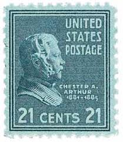 |
| eBay | Original Gum United States Green 20 Cent Denomination Stamps for sale | eBay | 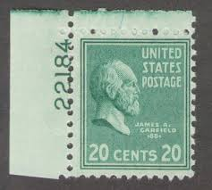 |
| VeVe Collectibles | USPS — Stamp Art — Presidential Series (1938) Series 3 - VeVe Digital Collectibles | 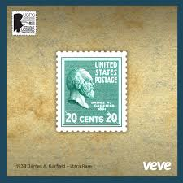 |
| Mercari | Lego Parts Lot: Hard-To-Find & Unique | Mercari | 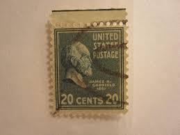 |
| Shutterstock | 3+ Hundred President Garfield Royalty-Free Images, Stock Photos & Pictures | Shutterstock | 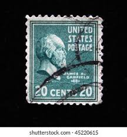 |
| Dreamstime.com | James Garfield Portrait Stock Photos - Free & Royalty-Free Stock Photos from Dreamstime | 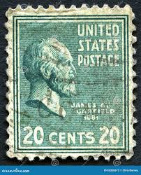 |
| PicClick UK | 1903 US # 305 James A. Garfield Stamp 6 cent Claret Pref 12 Used Lot 462 £4.75 - PicClick UK | 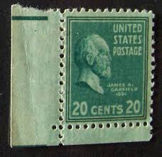 |
| eBay | 1952 *STANLEY HOME PRODUCTS, INC.* PATERSON, N.J. {SPECIAL DELIVERY} COVER+LOGO! | eBay | 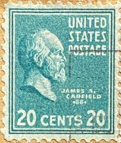 |
| eBay | US POSTAGE ~ James A. Garfield ~ Green 20₵ Stamp ~ Cancelled ~ c.1938 - 006 | eBay | 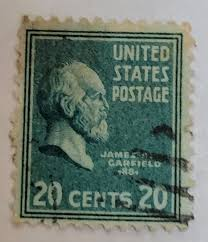 |
| United States 1939 Prexie issue joint line pairs | 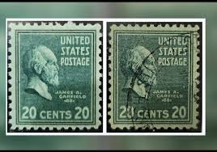 | |
| eBay | US POSTAGE ~ James A. Garfield ~ Green 20₵ Stamp ~ Cancelled ~ c.1938 - 002 | eBay | 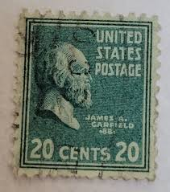 |
| eBay | US Postage 20c Garfield 1937-1939 Used | eBay | 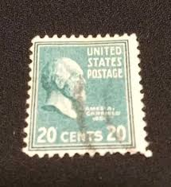 |
| STEVE LEVINE STAMPS-PLUS | U.S. Scott # 828, 1938 24c Benjamin Harrison - SteveLevineStamps-Plus | 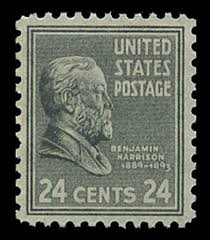 |
| eBay | US POSTAGE ~ James A. Garfield ~ Green 20₵ Stamp ~ Cancelled/Posted ~ c.1938 -41 | eBay | 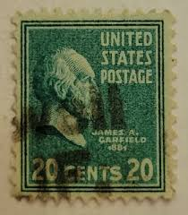 |
| eBay | US POSTAGE ~ James A. Garfield ~ Green 20₵ Stamp ~ Cancelled/Posted ~ c.1938 -43 | eBay | 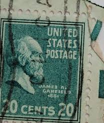 |
| eBay | US POSTAGE ~ James A. Garfield ~ Green 20₵ Stamp ~ Cancelled/Posted ~ c.1938 -63 | eBay | 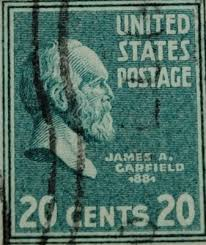 |
| eBay | US POSTAGE ~ James A. Garfield ~ Green 20₵ Stamp ~ Cancelled/Posted ~ c.1938 -17 | eBay | 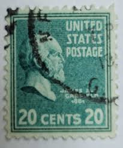 |
| eBay | US POSTAGE ~ James A. Garfield ~ Green 20₵ Stamp ~ Cancelled ~ c.1938 - 004 | eBay | 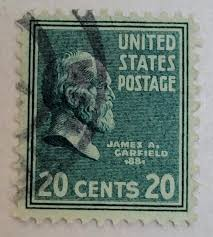 |
| eBay | US POSTAGE ~ James A. Garfield ~ Green 20₵ Stamp ~ Cancelled/Posted ~ c.1938 -58 | eBay | 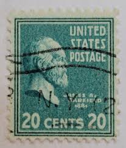 |
| eBay | US POSTAGE ~ James A. Garfield ~ Green 20₵ Stamp ~ Cancelled/Posted ~ c.1938 -69 | eBay | 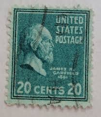 |
| eBay | US POSTAGE ~ James A. Garfield ~ Green 20₵ Stamp ~ Cancelled/Posted ~ c.1938 -70 | eBay | 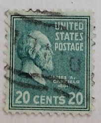 |
| eBay | US POSTAGE ~ James A. Garfield ~ Green 20₵ Stamp ~ Cancelled/Posted ~ c.1938 -75 | eBay | 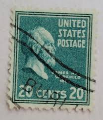 |
| eBay | Las mejores ofertas en Verde 20 cent denominación estampillas de EE. UU. usadas (1901-presente) | eBay | 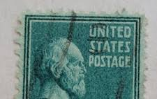 |
| eBay | US Stamp 1938 20c Garfield / 7c Jackson Used Prexie - #5803 | eBay | |
| eBay | US POSTAGE ~ James A. Garfield ~ Green 20₵ Stamp ~ Cancelled ~ c.1938 - 023 | eBay | |
| iStock | James Buchanan 1938 Stock Photo - Download Image Now - 1938, James Buchanan, No People - iStock | |
| eBay | US Postage Stamp Lot Presidents Cancelled 50s 60s 1 1.25 2 3 4 6 10 20 25 Cents | eBay | |
| eBay | Scott# 825 US Stamp 1938 20c James A. Garfield Used Prexie - #4532 | eBay | |
| eBay | Us Postage Unchecked Stamp Used - #G260 | eBay | |
| eBay | US POSTAGE ~ James A. Garfield ~ Green 20₵ Stamp ~ Cancelled/Posted ~ c.1938 -24 | eBay | |
| eBay | US POSTAGE ~ James A. Garfield ~ Green 20₵ Stamp ~ Cancelled/Posted ~ c.1938 -29 | eBay | |
| eBay Australia | 1938 James A. Garfield 20 Cent U.S. Postage Stamp Scott #825 Fine, Used | eBay Australia | |
| eBay | 1938 20c James A. Garfield, 20th President Scott 825 (A) | eBay |